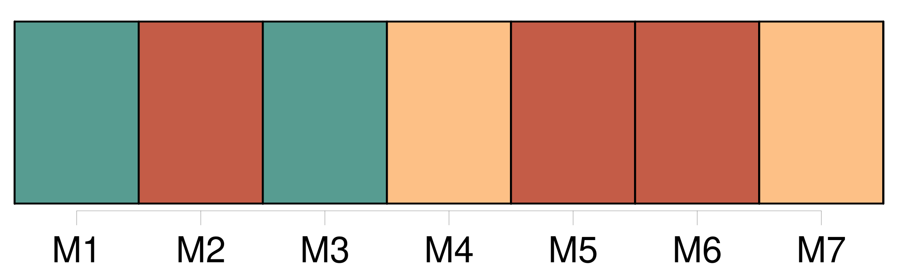
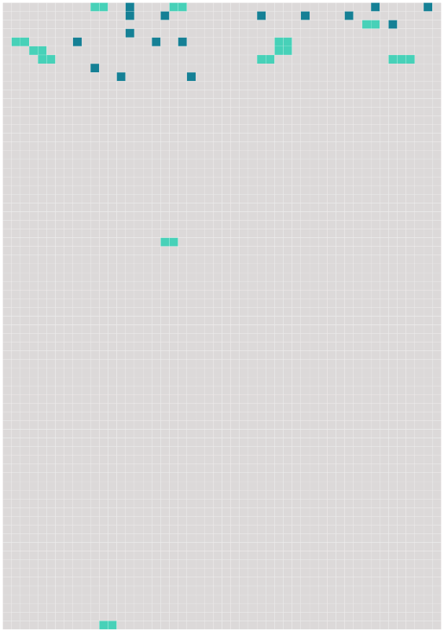

Longueur nb maillons : 28 mentions |
  |
La présence de Manine me fait moins faute depuis que [Mme Lapierre] vient passer [ses] après-midi avec moi. [Madame Lapierre] est une jeune femme infirme, venue à la Haie quelques années plus tôt sur le conseil de mes parents qui [l'] ont connue à Paris. [Sa] maison n'est pas très éloignée de la nôtre, et en s'aidant de [ses] deux béquilles, [elle] réussit à faire le chemin sans trop de fatigue. [Elle] est toujours accompagnée de [son] petit garçon, qu' [elle] appelle Jean, un bambin de sept ans, si parfait de corps et de visage qu'il est difficile de lui comparer un autre enfant. [1 phrases] Arrivée auprès de moi, [Mme Lapierre] jette [ses] béquilles à terre avec un geste de lassitude, comme si au lieu d'un soutien elles étaient pour [elle] un fardeau écrasant. [1 phrases]
Le petit Jean les ramasse et les pose en travers de ma voiture, et comme pour encourager [sa mère] à la patience, il [lui] dit :
Ces visites de [Mme Lapierre] déplaisaient fort à tante Rude, qui m'a tout de suite avertie que l'enfant était sans père et [la mère] sans mari.
Je ne vois rien de répréhensible à cela, comme a l'air de le penser tante Rude, et la compagnie de [Mme Lapierre] me devient de jour en jour plus agréable.
Manine est sûrement de mon avis, car aussitôt qu'elle aperçoit [la mère] et l'enfant, elle pousse ma voiture sous le gros noyer qui ombrage une partie de la maison et elle apporte pour [Mme Lapierre] sa plus belle chaise de paille.
Oncle meunier fait bon visage à [la jeune femme] , mais tante Rude me demande souvent : [2 phrases] C'est, pour [elle] , des projets touchant l'avenir de [son] enfant, et, pour moi, l'espoir de voir arriver aux prochaines vacances, les petits avec nos parents réconciliés à jamais. [44 phrases] L'automne revenu avec ses pluies m'oblige de rester dans la maison et empêche [Mme Lapierre] de venir auprès de moi. [94 phrases]
Les béquilles de [Mme Lapierre] me soutinrent pendant une semaine, puis ce fut une solide canne fabriquée par oncle meunier, et que j'abandonnais à toute minute, tant j'avais hâte de me déplacer par mes propres moyens. |
 |
La ressource peut être téléchargée sur la page Ortolang
Si vous avez des questions ou vous voyez des erreurs, merci d'envoyer un mail à silvia.federzoni89@gmail.com
Site développé par S. Federzoni (contact)